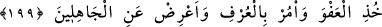
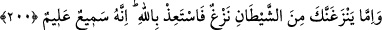
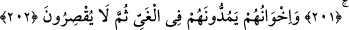

AF YOLUNU TUTMAK
199. (Resûlüm!) Sen af yolunu tut, iyiliği emret ve cahillerden yüz çevir.
200. Eğer şeytanın fitlemesi seni dürterse hemen Allah’a sığın. Çünkü O,
işitendir, bilendir.
201. Takvâya erenler var ya, onlara şeytan tarafından bir vesvese dokunduğunda
(Allah’ın emir ve yasaklarını) hatırlayıp hemen gerçeği görürler.
202. (Şeytanların) dostlarına gelince, şeytanlar onları azgınlığa sürüklerler. Sonra
da yakalarını bırakmazlar.
Ey Rasûlüm! “Sen af yolunu tut.”
Rivayete göre Rasûlullah (s.a.v), Cebrâil (a.s)’a “Af yolunu tutmak nedir?” diye
sordu. Cebrâil (a.s.): “Bilmiyorum, Rabb’ime sorayım.” dedi. Sonra öğrenip dönünce:
“Ey Muhammed! Rabb’in sana vermeyene vermeni, sana gelmeyene gitmeni, sana
zulmedeni affetmeni ve sana kötülük yapana iyilik yapmanı emrediyor.” dedi.[142]
Kim sana zehir verirse, sen ona şeker ver
Senden uzaklaşana, sen dost ol
Affetmek, Allah Teâlâ’nın ahlakındandır. Saîd b. Hişam der ki: Hz. Aişe validemizin
yanına varıp ona Hz. Peygamber (a.s.)’ın ahlakını sordum. Bana “Kur’an okumaz
mısın?” dedi. “Evet okurum.” deyince o: “Rasûlullah (s.a.v)’in ahlakı Kur’an’dı.” dedi.
[143]
Cenab-ı Hak o’nu Kur’an ile, “Sen af yolunu tut, iyiliği emret ve cahillerden yüz
çevir.”; “Başına gelenlere sabret. Doğrusu bunlar, azmedilmeye değer işlerdir”
(Lokman, 31/7); “Yine de sen onları affet ve aldırış etme.” (el-Mâide, 5/13) gibi
ayetlerle terbiye etmiştir. Bu ayetler O’nun yüce ahlakına delâlet ederler.
“İyiliği emret.” İşlerin güzel olanlarını ve hoş karşılananlarını emret. Çünkü onlar,
insanların zorluk göstermeden kabûl etmeleri için daha uygundur.
et-Teysir’de şöyle denilmiştir: “__WORD__”un (iyilik) Allah’dan korkmak, sıla-i rahimde
bulunmak, dili yalan ve benzerlerinden korumak, gözü haramlardan sakınmak ve âzâları
günahlardan uzak tutmak mânâlarına geldiği söylenmiştir.